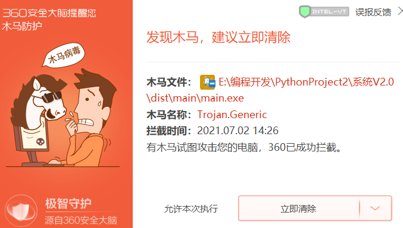

<%@LANGUAGE="JAVASCRIPT" CODEPAGE="65001"%>
<!DOCTYPE html PUBLIC "-//W3C//DTD XHTML 1.0 Transitional//EN" "http://www.w3.org/TR/xhtml1/DTD/xhtml1-transitional.dtd">
<html xmlns="http://www.w3.org/1999/xhtml">
<head>
<meta http-equiv="Content-Type" content="text/html; charset=utf-8" />
<!-- TemplateBeginEditable name="doctitle" -->
<title>无标题文档</title>
<!-- TemplateEndEditable -->
<!-- TemplateBeginEditable name="head" -->
<!-- TemplateEndEditable -->
</head>

<body>
<h1>如何添加信任?</h1>
<p>2021.7.2</p>
<p>&nbsp;</p>
<p>在运行程序时，可能会看到类似于如下界面(图1) </p>
<p></p>
<p>（图1）</p>
<p>您只需要点击立即清除旁边的小三角，点击“信任此文件&quot;(或类似按钮)即可。</p>
<p>&nbsp;</p>
</body>
</html>
